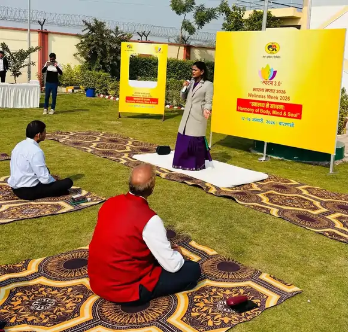

<script type="application/ld+json">
{
  "@context": "https://schema.org",
  "@graph": [
    {
      "@type": "Organization",
      "@id": "https://onlineyogaclass.in/#organization",
      "name": "Shringarika Mishra - Clinical Yoga",
      "url": "https://onlineyogaclass.in",
      "logo": "https://onlineyogaclass.in/images/logo.webp"
    },
    {
      "@type": "Person",
      "@id": "https://onlineyogaclass.in/#shringarika",
      "name": "Shringarika Mishra",
      "jobTitle": "Clinical Yoga Specialist & Research Scholar",
      "image": "https://onlineyogaclass.in/images/shringarika.webp",
      "sameAs": [
        "https://scholar.google.com/citations?user=FAp2CnkAAAAJ",
        "https://www.researchgate.net/profile/Shringarika-Mishra",
        "https://in.linkedin.com/in/shringarika-mishra-400607224"
      ]
    },
    {
      "@type": "BlogPosting",
      "@id": "https://onlineyogaclass.in/blogs/the-sodium-signal-decoding-why-chronic-stress-triggers-intense-salty-cravings.html#article",
      "isPartOf": {
        "@id": "https://onlineyogaclass.in/blogs/the-sodium-signal-decoding-why-chronic-stress-triggers-intense-salty-cravings.html"
      },
      "headline": "The Sodium Signal: Decoding Why Chronic Stress Triggers Intense Salty Cravings",
      "description": "Intense cravings for salty foods are often dismissed as a lack of willpower, but in Restorative Endocrinology, they are recognized as a survival signal from the HPA-axis. When the adrenal glands are overworked due to chronic stress—a state often termed "Adrenal Fatigue" or HPA-axis dysregulation—the production of Aldosterone drops. At BHU, our research indicates that this hormonal dip causes the kidneys to "waste" sodium, leading to an electrolyte imbalance that the brain attempts to fix through urgent salt cravings.",
      "image": "https://onlineyogaclass.in/images/stress.webp",
      "author": {
        "@id": "https://onlineyogaclass.in/#shringarika"
      },
      "publisher": {
        "@id": "https://onlineyogaclass.in/#organization"
      },
      "mainEntityOfPage": "https://onlineyogaclass.in/blogs/the-sodium-signal-decoding-why-chronic-stress-triggers-intense-salty-cravings.html"
    },
    {
      "@type": "BreadcrumbList",
      "@id": "https://onlineyogaclass.in/blogs/the-sodium-signal-decoding-why-chronic-stress-triggers-intense-salty-cravings.html#breadcrumb",
      "itemListElement": [
        {
          "@type": "ListItem",
          "position": 1,
          "name": "Home",
          "item": "https://onlineyogaclass.in/"
        },
        {
          "@type": "ListItem",
          "position": 2,
          "name": "Clinical Blogs",
          "item": "https://onlineyogaclass.in/blogs.html"
        },
        {
          "@type": "ListItem",
          "position": 3,
          "name": "The Sodium Signal: Decoding Why Chronic Stress Triggers Intense Salty Cravings",
          "item": "https://onlineyogaclass.in/blogs/the-sodium-signal-decoding-why-chronic-stress-triggers-intense-salty-cravings.html"
        }
      ]
    }
  ]
}
</script>

<main class="relative z-10 max-w-5xl mx-auto px-4 sm:px-6 lg:px-8 pt-32 pb-24">
    <div class="mb-10 max-w-3xl mx-auto rounded-[2.5rem] overflow-hidden bg-slate-50 border border-pink-50 shadow-md">
        
    </div>

    <div class="article-card bg-white border border-gray-100 rounded-[2.5rem] p-8 md:p-12 shadow-sm transition">
        <script type="application/ld+json">
    {
      "@context": "https://schema.org",
      "@type": "BlogPosting",
      "headline": "The Biochemical Link Between Salty Cravings and Adrenal Fatigue",
      "description": "Clinical analysis of HPA-axis dysregulation and aldosterone deficiency. Learn how chronic stress triggers salt wasting and how Clinical Yoga restores electrolyte balance.",
      "keywords": "Clinical Yoga in Varanasi, BHU Yoga Specialist, salty cravings adrenal fatigue, aldosterone and stress, Shringarika Mishra Research, HPA axis reset yoga",
      "author": {
        "@type": "Person",
        "name": "Shringarika Mishra"
      }
    }
    </script>

    <span class="text-pink-600 font-bold text-xs uppercase tracking-widest">Endocrine Pathophysiology &amp; Electrolyte Homeostasis</span>
    <h2 class="text-3xl md:text-4xl font-bold mt-2 mb-6">The Sodium Signal: Decoding Why Chronic Stress Triggers Intense Salty Cravings</h2>
    
    <div class="flex flex-col md:flex-row gap-8 mb-8">
        <div class="md:w-1/3">
            
        </div>
        <div class="md:w-2/3">
            <p class="text-gray-600 text-lg leading-relaxed">
                Intense cravings for salty foods are often dismissed as a lack of willpower, but in <strong>Restorative Endocrinology</strong>, they are recognized as a survival signal from the <strong>HPA-axis</strong>. When the adrenal glands are overworked due to chronic stress—a state often termed "Adrenal Fatigue" or HPA-axis dysregulation—the production of <strong>Aldosterone</strong> drops. At <strong>BHU</strong>, our research indicates that this hormonal dip causes the kidneys to "waste" sodium, leading to an electrolyte imbalance that the brain attempts to fix through urgent salt cravings.
            </p>
        </div>
    </div>
    
    <div class="full-content text-gray-700 space-y-8 leading-relaxed border-t border-gray-50 pt-8">
        
        <section>
            <h3 class="text-2xl font-bold text-gray-900 mb-3">The Aldosterone-Sodium Connection</h3>
            <p>
                From a neuro-anatomical perspective, the adrenal cortex produces aldosterone to regulate blood pressure by balancing sodium and potassium. Under acute stress, cortisol and aldosterone spike together. However, under <i>chronic</i> stress, the adrenals become desensitized.
            </p>
            
            <p>
                As aldosterone levels fall, your body cannot retain water or salt effectively, leading to low blood pressure, dizziness upon standing (orthostatic hypotension), and a biological drive to consume salt. For women with <strong>PCOS</strong>, this mineral loss can exacerbate fatigue and "brain fog."
            </p>
            <div class="my-6">
                
            </div>
            <p>
                According to reports by the <strong>World Health Organization (WHO)</strong> on stress-related metabolic disorders, electrolyte management is key to maintaining <strong>Neural Recovery</strong>. In our <strong>Varanasi Clinical Yoga</strong> programs, we focus on poses that physically support the adrenal region to signal the brain to stop the "salt-wasting" process.
            </p>
        </section>

        <section class="bg-pink-50 p-8 rounded-3xl border-l-8 border-pink-400">
            <h3 class="text-xl font-bold text-pink-800 mb-4">Interesting Fact: The Potassium Seesaw</h3>
            <p class="text-sm italic mb-4">
                Did you know that when sodium is low, potassium levels often become relatively too high? This "seesaw" effect can cause heart palpitations and muscle weakness. Clinical research suggests that <strong>Pranayama</strong> can help recalibrate this mineral balance by shifting the body into a parasympathetic state where the kidneys can function optimally.
            </p>
        </section>

        <section>
            <h3 class="text-2xl font-bold text-gray-900 mb-3">Clinical Yoga for Adrenal Restoration</h3>
            <p>At <strong>onlineyogaclass.in</strong>, we use specific "Adrenal Soothing" asanas to achieve <strong>Biological Scaling</strong>:</p>
            
            <div class="space-y-6 mt-4">
                <div class="border border-pink-100 p-5 rounded-2xl bg-white shadow-sm">
                    <h4 class="font-bold text-gray-900 mb-2"><i class="fas fa-bed text-pink-400 mr-2"></i>1. Supported Balasana (Child's Pose)</h4>
                    <p class="text-sm">By placing a bolster under the chest and forehead, we provide a "weighted" sense of security. This posture applies gentle pressure to the mid-back (the adrenal area), signaling the <strong>HPA-axis</strong> to reduce the "fight-or-flight" output.</p>
                </div>
                <div class="my-6">
                    
                </div>
                <div class="border border-pink-100 p-5 rounded-2xl bg-white shadow-sm">
                    <h4 class="font-bold text-gray-900 mb-2"><i class="fas fa-pills text-pink-400 mr-2"></i>2. Viparita Karani (Adrenal Drain)</h4>
                    <p class="text-sm">Legs-up-the-wall allows blood to pool in the pelvic and abdominal region, increasing <strong>Vascular Perfusion</strong> to the kidneys and adrenals. This helps in the efficient regulation of aldosterone and reduces the intensity of salty cravings.</p>
                </div>
            </div>
        </section>

        <section>
            <h3 class="text-2xl font-bold text-gray-900 mb-3">Why 'Clinical' Precision is Essential</h3>
            <p>
                As a <strong>Gold Medalist (University of Patanjali)</strong> and <strong>Research Scholar at BHU</strong>, I advocate for movement that heals rather than depletes. If you are already "adrenally fatigued," high-intensity exercise will only worsen your salt-wasting and exhaustion. Our evidence-based approach at <strong>onlineyogaclass.in</strong> focuses on <strong>Neural Recovery</strong>, ensuring that your <strong>Lunar Rhythm</strong> and metabolic health are restored through gentle, purposeful asana.
            </p>
        </section>

        <div class="border-t border-gray-100 pt-8 mt-8">
            <div class="bg-gray-900 text-white p-8 rounded-[2rem] shadow-2xl relative overflow-hidden">
                <div class="flex flex-col md:flex-row items-center gap-8 relative z-10">
                    
                    <div>
                        <h4 class="text-2xl font-bold mb-2">About Shringarika Mishra</h4>
                        <p class="text-sm text-gray-300 leading-relaxed">
                            Gold Medalist (University of Patanjali) &amp; NET JRF (AIR 2). Research Scholar at <strong>Banaras Hindu University (BHU)</strong> specializing in Clinical Yoga for Infertility and PCOS. With 11+ years of experience, she provides evidence-based healing through <strong>onlineyogaclass.in</strong>.
                        </p>
                        <div class="flex gap-4 mt-4">
                            <a href="https://www.researchgate.net/profile/Shringarika-Mishra" target="_blank" class="text-xs text-blue-400 font-bold hover:underline"><i class="fab fa-researchgate mr-1"></i> ResearchGate</a>
                            <a href="https://scholar.google.com/citations?user=FAp2CnkAAAAJ&amp;hl=en" target="_blank" class="text-xs text-red-400 font-bold hover:underline"><i class="fab fa-google mr-1"></i> Google Scholar</a>
                        </div>
                    </div>
                </div>
                
                <div class="mt-10 flex flex-col md:flex-row justify-center gap-4">
                    <a href="../../programs/pcos/" class="bg-pink-600 text-white px-10 py-4 rounded-full font-bold hover:bg-pink-700 transition shadow-lg text-center text-lg">
                        Join the Adrenal Recovery Program
                    </a>
                    <a href="https://wa.me/919559827280" class="border-2 border-green-500 text-green-500 px-10 py-4 rounded-full font-bold hover:bg-green-50 transition text-center text-lg">
                        <i class="fab fa-whatsapp mr-2"></i> Free Clinical Consultation
                    </a>
                </div>
            </div>
        </div>

        <p class="text-[10px] text-gray-400 mt-12 text-center leading-relaxed italic">
            <strong>Medical Disclaimer:</strong> The clinical information and research-based insights provided in this article are for educational purposes based on research conducted at BHU. This is not a substitute for professional medical advice, diagnosis, or treatment. Adrenal health is complex; always consult with your endocrinologist or a Clinical Yoga Specialist before starting new therapeutic protocols.
        </p>
    </div>
        
        
                    <div class="mt-12 pt-8 border-t border-slate-100 text-left">
                        <h4 class="text-xl font-black text-slate-900 tracking-tight mb-4 flex items-center gap-2">
                            <span class="w-1 h-6 bg-pink-500 rounded-full"></span> Read More Clinical Insights
                        </h4>
                        <ul class="space-y-3 font-semibold text-pink-600 text-sm md:text-base">
                            <li>
                                <a href="glomerular-guard-3-clinical-yoga-asanas-to-mitigate-the-risk-of-diabetic-nephropathy.html" class="hover:text-pink-700 hover:underline transition flex items-center gap-2">
                                    <i class="fas fa-book-open text-xs text-pink-400"></i> Glomerular Guard: 3 Clinical Yoga Asanas to Mitigate the Risk of Diabetic Nephropathy
                                </a>
                            </li>
                            <li>
                                <a href="the-pharmacological-buffer-why-timing-your-yoga-practice-is-critical-when-managing-hypertension.html" class="hover:text-pink-700 hover:underline transition flex items-center gap-2">
                                    <i class="fas fa-book-open text-xs text-pink-400"></i> The Pharmacological Buffer: Why Timing Your Yoga Practice is Critical When Managing Hypertension
                                </a>
                            </li>
                        </ul>
                    </div>
    </div>
</main>
